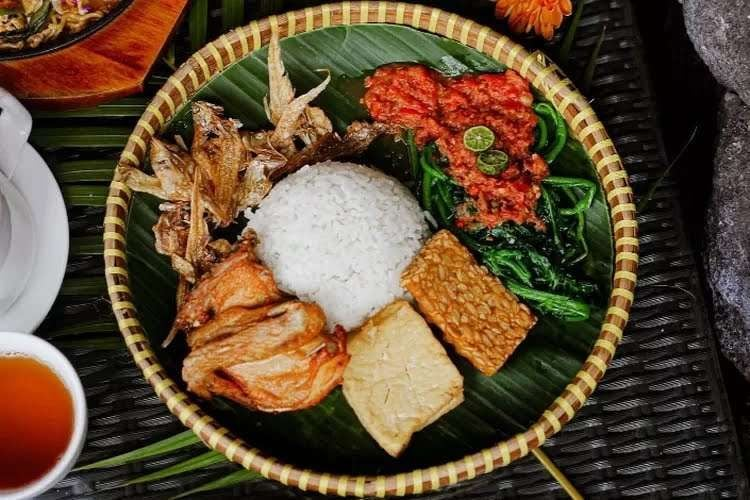
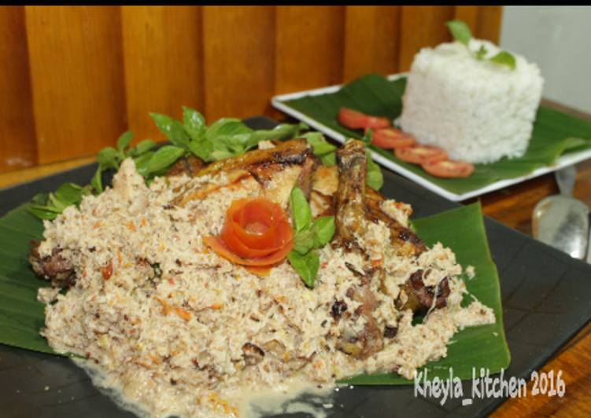
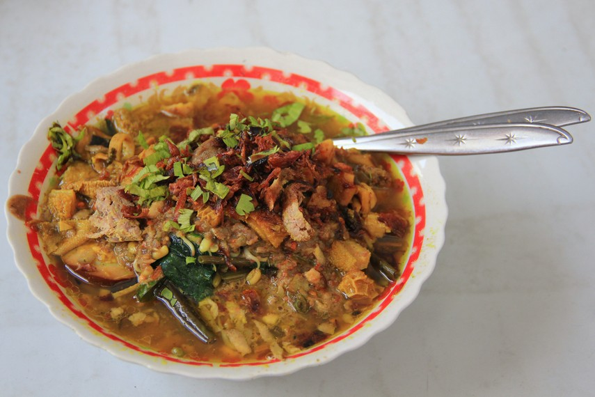
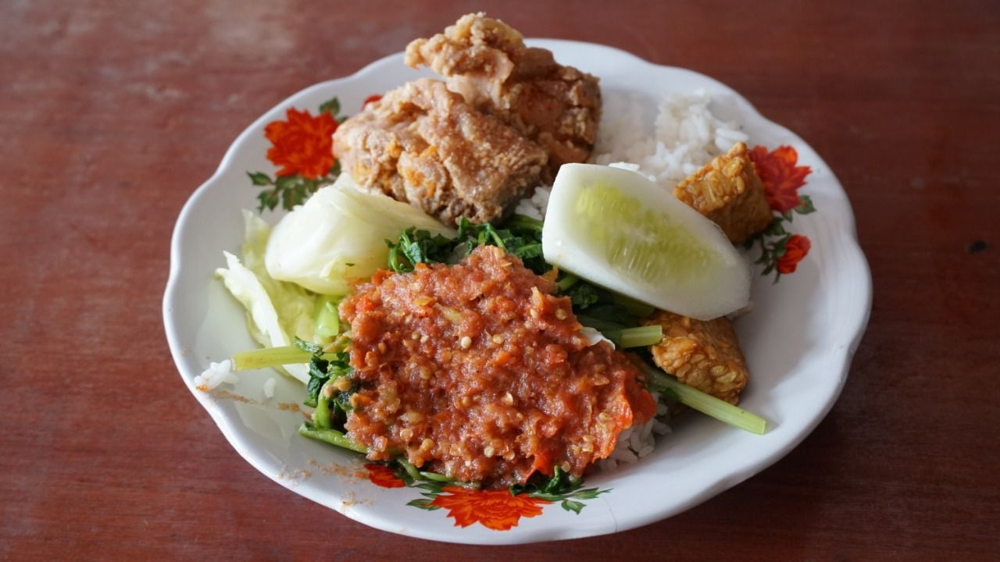
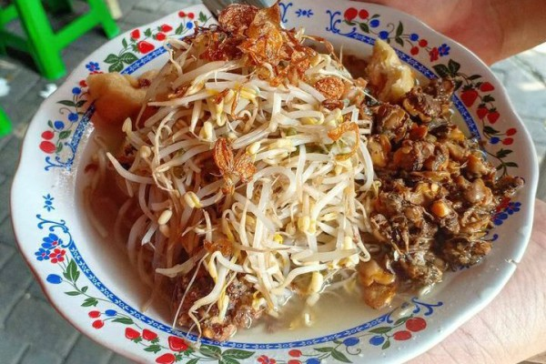
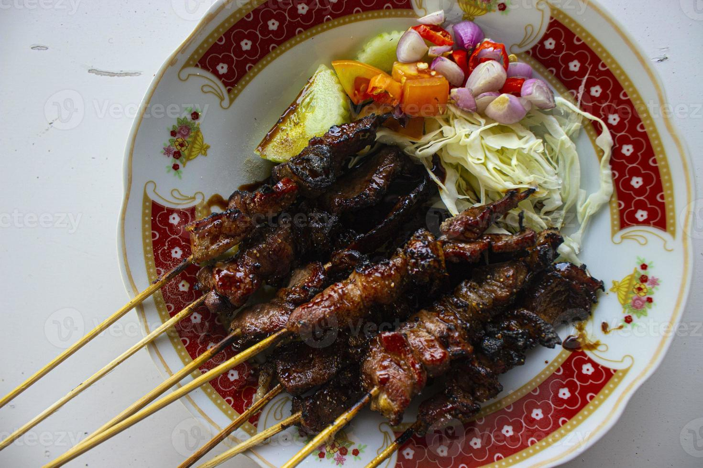

15 Makanan Unik Khas Banyuwangi,
Banyak Yang Unik,
Salah Satunya Sego Tempong

Banyuwangi, salah satu kabupaten di daerah Jawa Timur yang terletak di ujung timur Pulau Jawa.
Beberapa tahun belakangan, destinasi wisata Banyuwangi kian bergaung.
Sambil berwisata di alam Banyuwangi yang cantik, kamu juga bisa mencicipi kuliner khas Banyuwangi.
Makanan khas Banyuwangi tebilang unik, lantaran banyak menggabungkan dua jenis makanan jadi satu makanan.
Ada banyak makanan khas Banyuwangi yang sulit ditemui di daerah lain.
Berikut 5 makanan khas Banyuwangi yang dapat kamu coba saat berkunjung ke sana.
1.Pecel Pitik

Pecel pitik adalah makanan khas Banyuwangi yang terbuat dari daging ayam kampung yang disuwir-suwir, kemudian dicampur dengan bumbu pecel.
Bumbu pecel ini terbuat dari campuran kacang tanah, cabai, kencur, gula merah, dan garam.
Baca Juga Tentang Resep Pecel Pitik
Biasanya, pecel pitik disajikan dengan nasi putih hangat, lalapan, dan kerupuk.
Rasanya yang gurih dan pedas membuat pecel pitik menjadi salah satu makanan favorit di Banyuwangi.
2. Rujak Soto

Rujak soto adalah makanan khas Banyuwangi yang merupakan perpaduan antara rujak dan soto.
Rujak ini terbuat dari berbagai macam sayuran dan buah-buahan seperti bengkuang, nanas, mentimun, dan kedondong yang dipotong kecil-kecil.
Sedangkan soto terdiri dari kuah kaldu ayam yang gurih dengan tambahan daging ayam suwir, tauge, dan telur rebus.
Baca Juga Tentang Resep Rujak Soto
Rujak soto disajikan dengan cara mencampurkan rujak dan soto dalam satu mangkuk.
Rasanya yang segar dan gurih membuat rujak soto menjadi salah satu makanan favorit di Banyuwangi.
3. Sego Tempong

Sego tempong adalah makanan khas Banyuwangi yang terdiri dari nasi putih yang disajikan dengan berbagai macam lauk pauk seperti ikan asin, tempe goreng, tahu goreng, dan sambal.
Sambal yang digunakan pada sego tempong ini terbuat dari campuran cabai rawit, bawang merah, tomat, dan terasi yang diulek kasar.
Baca Juga Tentang Resep Sego Tempong
Rasanya yang pedas dan gurih membuat sego tempong menjadi salah satu makanan favorit di Banyuwangi.
4. Lontong Balap

Lontong balap adalah makanan khas Banyuwangi yang terdiri dari lontong yang disajikan dengan tauge, lentho (perkedel singkong), tahu goreng, dan sambal petis.
Sambal petis ini terbuat dari campuran petis udang, cabai, bawang putih, dan gula merah yang diulek kasar.
Baca Juga Tentang Resep Lontong Balap
Rasanya yang gurih dan pedas membuat lontong balap menjadi salah satu makanan favorit di Banyuwangi.
5. Sate Klatak

Sate klatak adalah makanan khas Banyuwangi yang terbuat dari daging kambing muda yang dipotong kecil-kecil dan ditusuk dengan bambu.
Sate ini dibakar di atas arang dan disajikan dengan kuah gulai yang gurih.
Baca Juga Tentang Resep Sate Klatak
Rasanya yang gurih dan lezat membuat sate klatak menjadi salah satu makanan favorit di Banyuwangi.